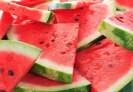
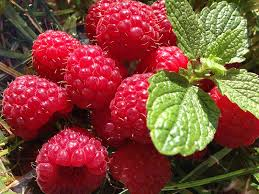

Mango
Mango är en stenfrukt som idag odlas över hela världen och det är den näst viktigaste tropiska frukten efter bananen.
Mangons saftiga fruktkött kan ätas naturellt men det gör sig också bra i juicer, smoothies,
marmelader och till exempel i en nudelsallad med avokado, tunt skivad lök och chili.

Vattenmelon
Vattenmelon (Citrullus lanatus) är en sommarfrukt med upp till 92% vatten, rik på vitaminer, mineraler och antioxidanter som lykopen.
Frukten har en lång historia, odlades redan i det forntida Egypten och har sina rötter i Afrika.
Vattenmelon passar bra som dessert, i sallader, som glass eller smoothie och är kalorisnål men kan vara svårsmält för känsliga magar.

Hallon
Hallon är en växt som ger ätbara bär och kan odlas enkelt i soliga, väldränerade lägen med mullrik, lite sur jord.
Det finns sommarhallon (bär på tvåårsskotten) och hösthallon (bär på ettårsskotten), som båda vissnar ner efter skörd.
Skotten binds upp och gallras, och man kan njuta av färska hallon från trädgården.
